| |
TPR's Scandinavia Trip
Copenhagen Sommerland Sjaelland Bakken Tivoli Gardens Bon Bon Land
Hansa Park Legoland Billund Djurs Sommerland
Tivoli Friheden Farup Sommerland Tusenfryd Liseberg Skara Sommerland
Grona Lund
Power Park
Sarkanemmi
Linnemaki
All right. After the overnight ferry, we have arrived in Helsinki and are off on a bus ride to Northern Finland, where the sun never sets.
Halfway through the drive, we made a pit stop at some place called Fun Park.
 There's only one reason we'd stop at a place like this.
There's only one reason we'd stop at a place like this.
 That's right!! We're here to credit whore!!! Hooray for getting random obscure kiddy credits in the middle of Finland!! =)
That's right!! We're here to credit whore!!! Hooray for getting random obscure kiddy credits in the middle of Finland!! =)
And now, we have pissed off a whole swarm of Finnish parents.
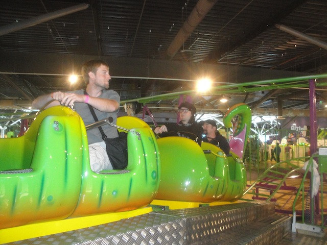
They couldn't figure out how to re-program it to only go around once. So we all had to take 8 laps on this crappy thing.
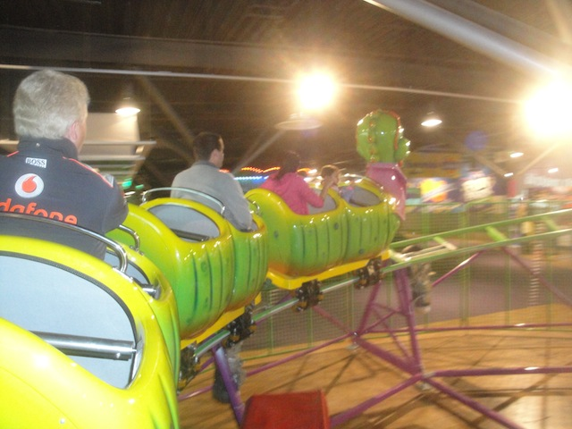
Cha-Ching.
Wasn't a fan of the lunch here, but then again, this isn't exactly the place you go to experience quality food.
 Dude!!! They have Supernova Mountain Dew over here!! Why does Europe get all the cool products like Urge, Mtn Dew Supernova, Good Beer & Crispy M&Ms, and we're stuck with crap. GET TO AMERICA ASAP!!!
Dude!!! They have Supernova Mountain Dew over here!! Why does Europe get all the cool products like Urge, Mtn Dew Supernova, Good Beer & Crispy M&Ms, and we're stuck with crap. GET TO AMERICA ASAP!!!
So long Fun Park. I'll return once you get that Kraken clone you have pictured.
We now continue our drive up into Northern Finland.
Not a big fan of the roadwork. The tar fumes are leaking onto the bus.
Oh yeah. Forgot to mention. During the Insane Water Challenge @ Grona Lund, my team apparently won despite sucking (perhaps we won the "We didn't cheat" award), so I got this giant box of Bilar, a Swedish Gummy/Fruity/Marshmellowy Candy that was...interseting. That box lasted me a month after the trip ended. =)
For the best hotel of the trip, we actually got to stay in cabins. Yeah, we actually got to stay in a cabin in the middle of nowhere, Northern Finland.
Kind of bummed that this is for only one night. This seems awesome.
"This is the room I'll be sleeping in tonight. Jealous?" =)
And yes, the cabin does have a sauna, which I was more than happy to use.
Aww. Look at the cute little baby starflyer. I just want to pet it.
The good news is that Power Park does have a booster here that's completely free. SWEET!! The bad news is that this one has a HORRIBLE program and is WAY slower than Speed. =(
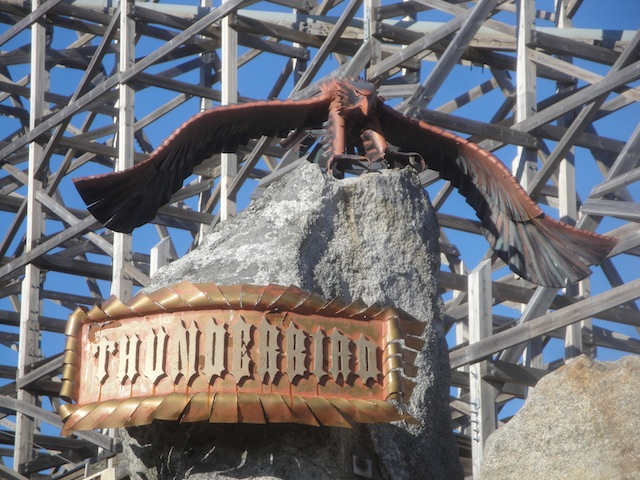
All right. Time to move on for Night ERT on Thunderbird.
Fun fact about the Thunderbird Station, it's themed to America and names a bunch of random American cities such as Orlando, Chicago, Dallas, and San Diego. Hey, I've been to all four of those places. =)
Thunderbird may be an Evil Kineval clone, but for some reason, this one is just much better.
Yeah. You're getting a good look at the twisted mess of track you'll be flying throughout the entire ride. =)
If you're looking for a ride with good airtime, good laterals, and a constant sense of speed, then Thunderbird is the ride for you.
 Moving onto the next credit open for ERT, we now take a ride on Cobra, the park's Boomerang.
Moving onto the next credit open for ERT, we now take a ride on Cobra, the park's Boomerang.
 This is easily the most interesting Boomerang I've ridden. Not only is it smooth as glass, but it also has magnetic brakes, which oddly enough, give it this weird feeling I can't really describe. It just seems like a sudden, yet smooth stop into the station. So good job on your Boomerang Power Park.
This is easily the most interesting Boomerang I've ridden. Not only is it smooth as glass, but it also has magnetic brakes, which oddly enough, give it this weird feeling I can't really describe. It just seems like a sudden, yet smooth stop into the station. So good job on your Boomerang Power Park.
 GOD DAMMIT!!! EVERY SINGLE YEAR, I MUST RIDE A POLE POSITION CLONE!!! Well, actually, I got last year off. But that was just a freak accident fluke. This year, I'm back to riding another stupid Pole Position clone.
GOD DAMMIT!!! EVERY SINGLE YEAR, I MUST RIDE A POLE POSITION CLONE!!! Well, actually, I got last year off. But that was just a freak accident fluke. This year, I'm back to riding another stupid Pole Position clone.
Though to be fair, this one was really good. Dammit, I think I actually like these rides now.
Well, ERT is over. Time move over to the Park Hotel Resteraunt for our dinner.
Everyone is looking foreword to eating Rudolph.
Sadly, no reindeer was consumed at this dinner. But the large warm peices of meat were very tasty. The cold really dark meat, pretty bad.
As a bonus surprise, we got yep. MORE THUNDERBIRD ERT!!! YAY!!!! We had fun sending out a fat train to try and beat the parks record for fastest ride ever.
Yeah. This ride hauls ass.
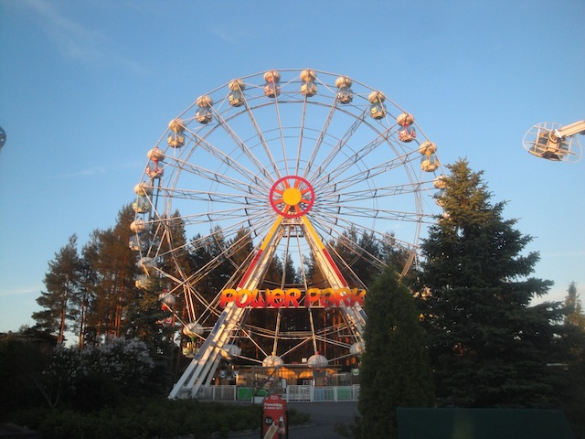
Thanks for the great night Power Park. I'm looking foreword to more fun at your park tomorrow.
But the fun didn't end there. Later, a good chunk of us went over to Shawn's cabin for Jello Shots.
Yes, you are reading that correctly. It is 12:16 AM, and the sun is still out. The sun never sets in Northern Finland. And I LOVE IT!!! =)
The next morning, we actually started out with a Go-Karting tournament. And when I say Go Karting, I don't mean the crappy stuff you find at Golf 'N' Stuff or as an upcharge at parks like Six Flags Magic Mountain. These are REAL Go Karts on a REAL track that can reach speeds of 60 mph and actually have spin outs and all that fun stuff. So what are we waiting for!!! Let's get racing!!!
And as some of you assumed, I am HORRIBLE at Go Karting. I got 2nd to last place in my heat. Well...at least I beat Ross. So hooray for that. But yeah, I suck at this.
Ooh. I spy with my little eyes, a spin out. =)
Well, after all the other heats went, the top people were put against one another for a big grand finale.
 "Wait!! Stop!!! I didn't say go yet!!!"
"Wait!! Stop!!! I didn't say go yet!!!"
Yeah. It was a really good race between all the best people. Congratulations to all those who made it to the top round.
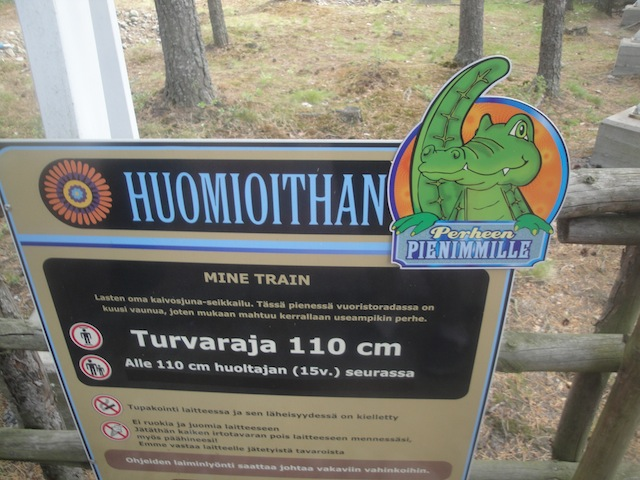
Ok. Lets just this crappy credit out of the way.
I've ridden way too many clones of this ride.
Cha-Ching.
 All right. Let's check out Dragon Tower, AKA, a Mach Tower. I know the one at BGW has gotten a lot of criticism for constantly breaking down and sucking when it does run. Well this one does run, but...
All right. Let's check out Dragon Tower, AKA, a Mach Tower. I know the one at BGW has gotten a lot of criticism for constantly breaking down and sucking when it does run. Well this one does run, but...
Yeah. This ride does in fact suck. Not because the drop is weak or anything. That's just fine. It sucks because of the seats. These have got to be the worst seats ever designed on ANY ride!!! There's NO ROOM!! I felt like my arms were tied to my sides when I rode this thing. And I'm a skinny-ass twig. How the hell do more obese Americans fit in this thing? No seriously, how the hell could those people fit when a skinnyass guy like me felt claustraphobic on a ride like this!? FIX THESE SEATS NOW AND REMOVE THOSE HORRIBLE ARM SHIELDS!!!! It's even more uncomfortable than neck-chopping Manhatten Express. Think about that for a second and let that sink in.
Checking out this cabin area in the back of Power Park. I does look nice, I must admit.
Thunderbird through the trees.
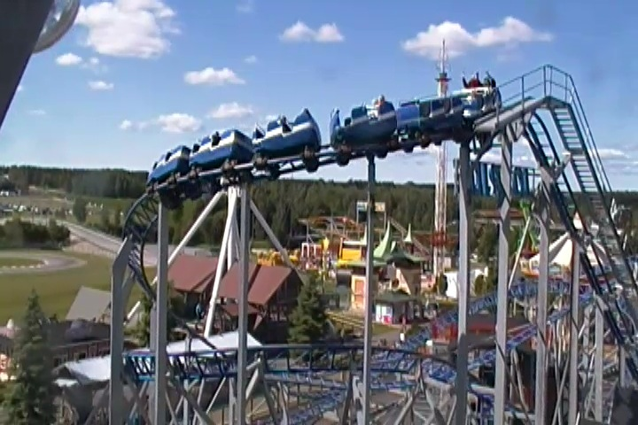
Just one last credit for me to get at Power Park.
 Nothing special about this ride. Just seemed like a coaster you'd find at any random carnival plopped down in the middle of the asphalt.
Nothing special about this ride. Just seemed like a coaster you'd find at any random carnival plopped down in the middle of the asphalt.
 Joyride vs Cobra. FIGHT!!!!
Joyride vs Cobra. FIGHT!!!!
Time to check out Power Park's frisbee, which has to be one of the coolest frisbees ever.
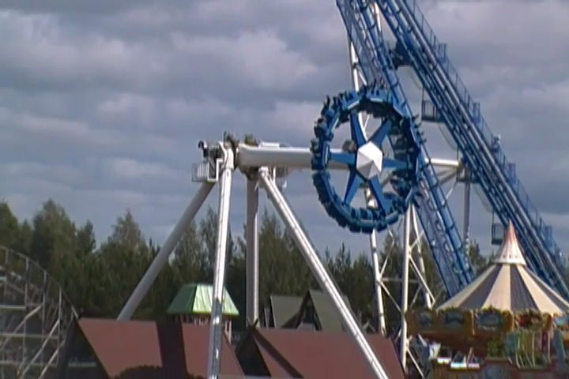
It's not one of the coolest frisbees ever because of it's program (though that's fun too).
But because it's a partially indoor frisbee. Yep, it goes through a house. How cool is that!? Not to mention all the amazing headchoppers. =)
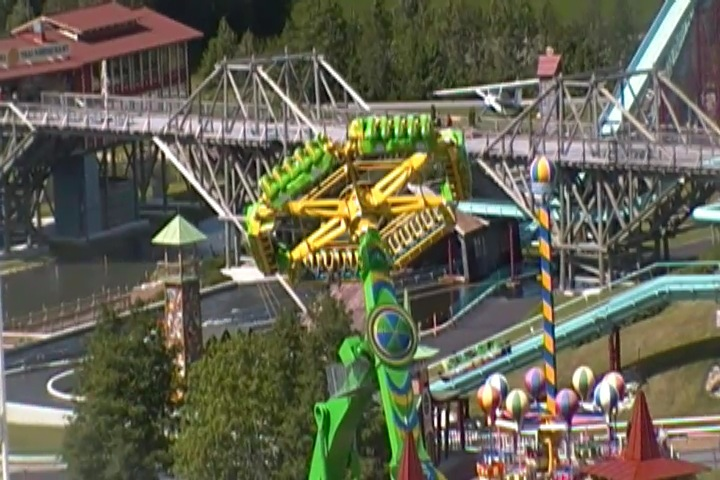
But not even the indoor/outdoor frisbee can hold a candle to this ride, which is easily one of the CRAZIEST flat rides ever. I might just put it on my Top 10 Flat Rides List depending on how it pars up with all the other gems.
All right. Time for lunch at the Steakhouse Canyon.
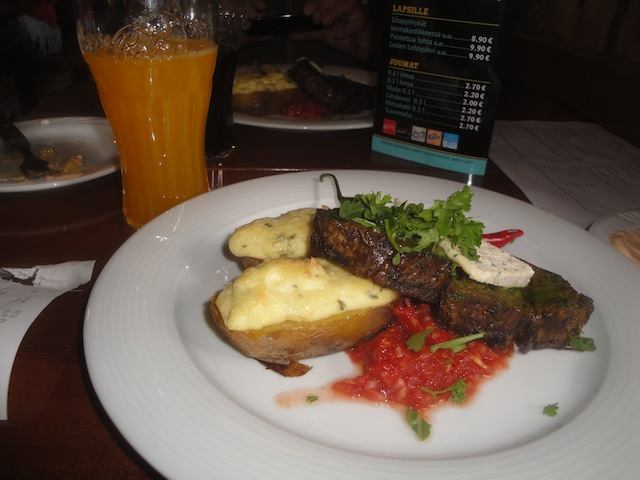
The meal was more expensive than the voucher we recived was worth, so I did have to pay some more on top, but that's all right since meal was AWESOME. Seriously, this was one of my favorite meals of the trip. And that's saying a lot.
 Quick word of advice. Watch your back on this shooting dark ride.
Quick word of advice. Watch your back on this shooting dark ride.
The bumper cars here may not look special, but just remember that there's no dumb rules here. You can bump whoever you want with noone yelling at you to follow the dumbass one way signs. =)
Took a quick ride on the Ferris Wheel for some shots. It's not huge, but there are a couple good shots from up here.
 All right. Time to get one last ride on Thunderbird before we head on out of Power Park. So long, I love the place you have up here.
All right. Time to get one last ride on Thunderbird before we head on out of Power Park. So long, I love the place you have up here.
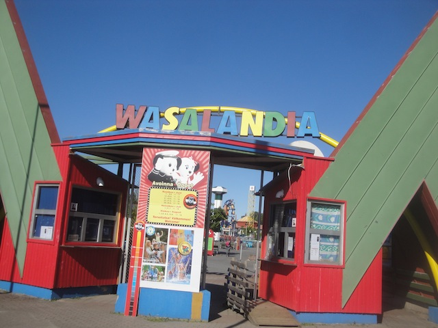
But first, we make a quick stop at Wasalandia because...
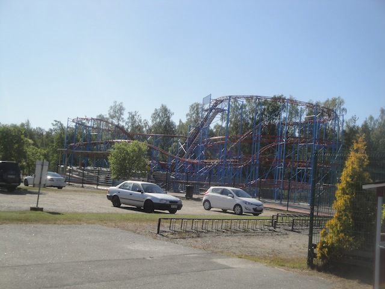
Yep. MORE CREDIT WHORING!!! =)
The park, knowning that we came from pretty much all over the world, did not want us to ignore the rest of the fabolous park of Wasalandia. So they took us on a special tour to explore all of Wasalandia and what it has to offer. Well this will certainly make my future review of the park far more detailed than for other credit whoring stops.
I weep for all those who count that as a credit.
Mmm. Ferris Wheel with cars shaped like cans of Jaffa (European Fanta Knock off that's still way more orangy than anything in the U.S). Dammit!! Now I want a European Fanta!!
 Next up, they showed us their log flume, which wasn't amazing or anything, but it was fun.
Next up, they showed us their log flume, which wasn't amazing or anything, but it was fun.
SPLOOSH!!!
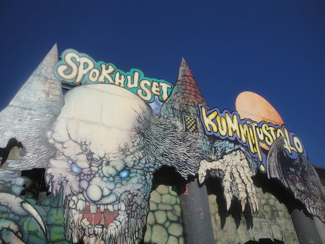
In a failed effort to scare us away, they took us through a tour of their Spook House.
"Hey everyone!! I did the Spook House!! Be proud of me!!"
 And of course, they took us on a ride on their Pirate Ship. And it was fun and all...
And of course, they took us on a ride on their Pirate Ship. And it was fun and all...
But that is easily the best part of the ride right there.
 And finally, the time has come. We actually get to get the credit. YAY!!! =)
And finally, the time has come. We actually get to get the credit. YAY!!! =)
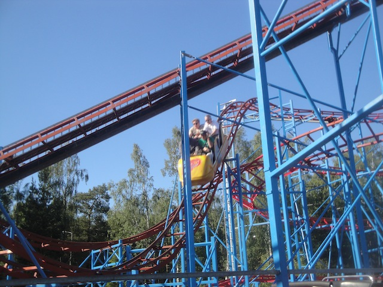
Truley, you can see why I came all the way from California to ride this truley amazing ride all the way out in Finland.
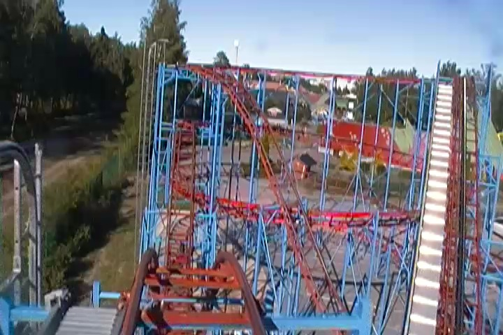
Fun fact. I now have every single credit in all of Finland (once the trip ended of course).
Meanwhile, as we got back on the bus, Ross's poor polar bear was severely molested by several different people including me. I know there are photos of this somewhere and sooner or later, they'll pop up. =)
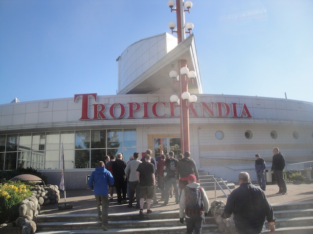
And of course, we move on for dinner at this place called Tropiclandia.
 Not a major fan of this place, but hey. Food is food.
Not a major fan of this place, but hey. Food is food.
Love the view of the Gulf of Bothnia right alongside the resteraunt.
Sarkanemmi
Home
|